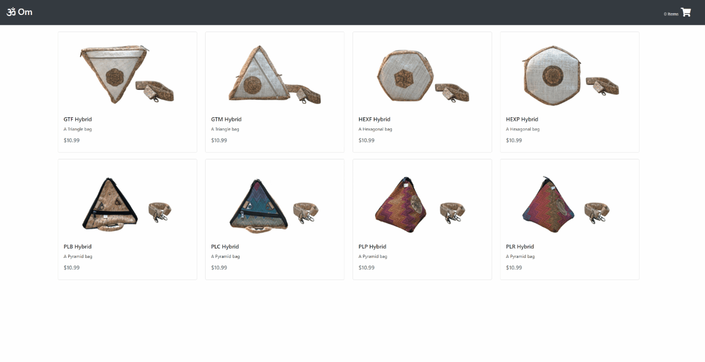

Software Projects Text Lorem  Om A full stack shopping cart This cart was built using PostgreSQL, Node.js, and React travelwise A single page travel application This app was created using jQuery for AJAX requests and vanilla JavaScript a-eye A full stack image classification application This app was created using PostgreSQL, Node.js, React, and TensorFlow.js Text Lorem